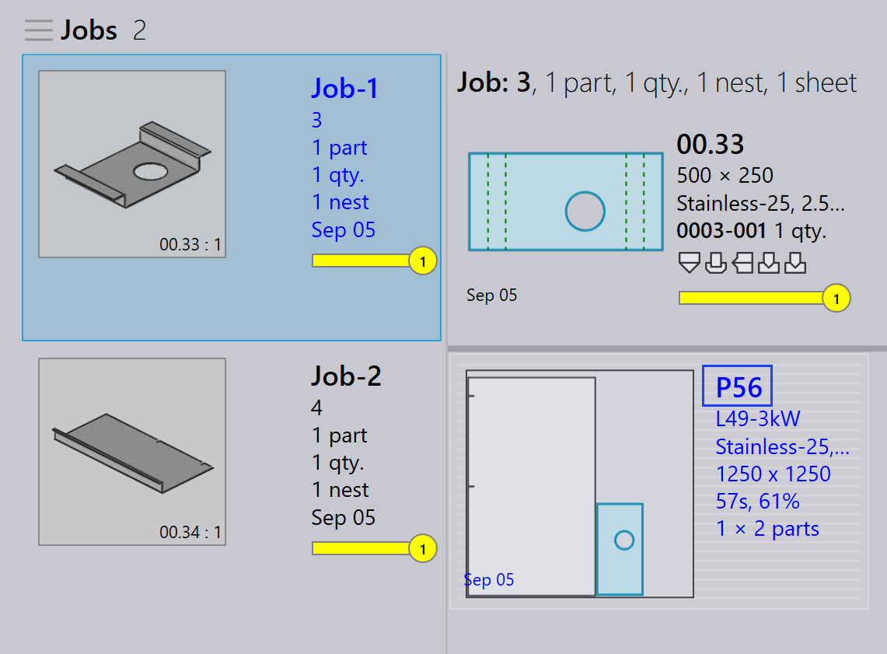

Umpacken
TruSmartCAM verfügt nicht über ein separates Umpackmodul. Stattdessen wird das Umpacken über Optionen auf Auftragsebene durchgeführt, die Flexibilität bei der Kombination von Teilen bieten.
Es gibt drei Möglichkeiten, wie das Umpacken durchgeführt werden kann.
-
Umpacken mit Teile aus mehreren Jobs mischen.
-
Manuelles Umpacken mit dem Teile hinzufügen…-Interaktiv-Assistenten.
-
Manuelles Umpacken mit TecZone.
Umpacken mit Teile aus mehreren Jobs mischen
-
Um diese Option zu aktivieren, gehen Sie zu Werk → Einstellungen → Job → Schachteleinstellungen → Teile aus mehreren Jobs mischen.

-
Wenn diese Option aktiviert ist, können Teile aus verschiedenen Aufträgen während des automatischen Verschachtelns oder interaktiven Verschachtelns zusammen gruppiert werden, was zu einer kombinierten Verpackung oder Verschachtelung führt.
-
Zum Beispiel:
-
Auftrag-1 hat 1 Teil, Auftrag-2 hat 1 Teil.
-
Mit aktiviertem Teile aus mehreren Jobs mischen kann TruSmartCAM diese 2 Teile in eine einzige optimierte Verschachtelung umpacken.
-


-
Ohne diese Option bleiben Teile aus jedem Auftrag während des Verschachtelns/Packens mit unterschiedlichen Layout-Namen getrennt.
-
Das Umpacken kann auch manuell durchgeführt werden, ohne diese Option zu aktivieren.
Manuelles Umpacken mit dem Teile-hinzufügen-Interaktiv-Assistenten
-
Wählen Sie in der Layout-Ansicht die Teile aus, die Sie umpacken möchten.
-
Klicken Sie mit der rechten Maustaste auf das Teil und wählen Sie Teile hinzufügen… aus dem Layout-Panel.

-
Befolgen Sie die Anweisungen im Assistenten, um den Umpackvorgang abzuschließen.
-
Wählen Sie Zeige andere Teile und fügen Sie sie zum aktuellen Auftrag hinzu.

-
Überprüfen Sie die Änderungen und bestätigen Sie das Umpacken.

Weitere Details finden Sie unter Add Parts.
Manuelles Umpacken mit TecZone
-
Öffnen Sie TecZone, indem Sie auf
 klicken.
klicken.

-
Klicken Sie in der TecZone-Oberfläche auf "Add".

-
Ein neues Fenster erscheint, in dem Sie die Teile auswählen können, die umgepackt werden sollen. Klicken Sie auf Zeige … und wählen Sie dann Andere Job Teile aus. Klicken Sie nach der Auswahl auf _Antippen.

-
Ein neues Fenster erscheint, in dem Sie definieren können, wo das Teil umgepackt werden soll.

-
Klicken Sie auf Änderungen in Praxis speichern und das umgepackte Layout wird in TruSmartCAM verfügbar sein.
